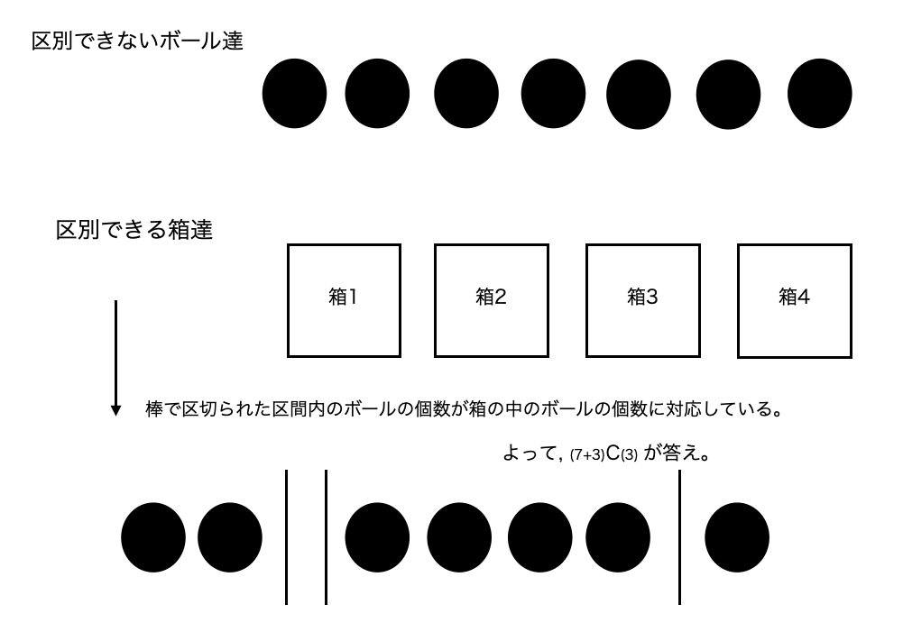
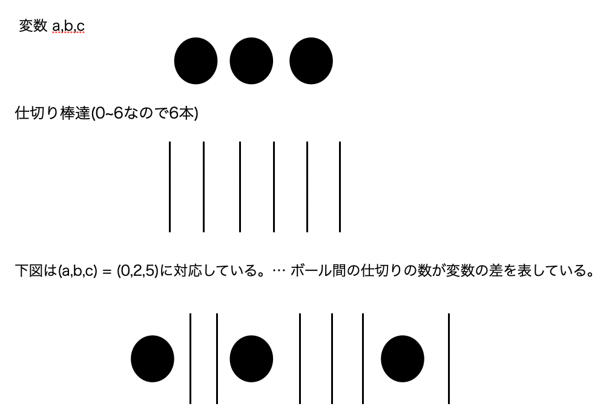

前のページ
重複組み合わせとは、区別しないボールを、区別できる箱に入れる時の入れ方の総数です。
ボールが7つ、箱が4つの場合で考えてみましょう。
図で示すと、こうなります。

このような単純な場合は、ボールを(箱の個数-1)本の棒で仕切れば良いとわかるのですが、
例えば、すべての箱には必ず1個以上のボールが入っていなければならないという条件付きならどうでしょう。
この場合、4つの箱に一つずつボールを入れて、残り3つのボールを先ほどと同じように棒と一緒に並べれば良いです。
よって、答えは(7-4+3)C(3)となります。
ボールが区別できないからこそ、条件を満たすように先にボールを割り当ててから考えるということができるのです。
練習問題1
a + b + c <= 7 という条件を満たす整数の組 (a,b,c) の総数を求めてみましょう。
もし仮に a+b+c = 7であれば、7個のボールを a,b,cという箱に割り当てる問題になるのですが、残念ながら今回はそうではありません。
そこで、W = 7-a-b-c という 変数を考えてみます。
すると a+b+c+W = 7という式が得られます。これは 7個 のボールを a,b,c,Wという4つの箱に割り当てる重複組合せと考えることができます。
練習問題2
0<= a <= b <= c <= 6となるような整数の組み (a,b,c) の総数を求めてみましょう。
練習問題1では変数 a,b,c を箱としてみなしていましたが、今回は変数 a,b,c を区別しないボールとして考えます。
以下の図を見てください。

このように、変数の間の仕切り棒の本数を変数の差(の絶対値)として並べると綺麗に対応できています。
まとめ
区別できないボールは自由に並べていいので、条件がついている重複組合せの場合は、先に条件を満たすようにボールを配置してから残りのボールを並べる。
整数の変数が出てくる問題は、重複組合せの問題として捉えることができることがある。
ちなみにこちらの問題は練習問題２を知っていると解けます。
以下はコード例です(mod計算を使用しているので、mod計算のページも参照ください)。
- //include
- //------------------------------------------
- #include<iostream>
- #include<vector>
- #include<queue>
- #include<map>
- #include<algorithm>
- using namespace std;
- const long long INF = 1e18;
- long long MOD = 1000000007;
- long long modpow(long long a, long long b , long long m){
- vector<int> bit;
-
- for(int i = 0 ; i <= 62;i++){
- if(b&(1ll<<i))bit.push_back(i);
- }
- vector<long long> power(63 , 0);
- power[0] = (a%m+m)%m;
- for(int x = 1 ; x <= 62 ; x++){
- power[x] = power[x-1]*power[x-1];
- power[x] %=m;
- }
- long long res = 1;
- for(int b : bit){
- res *= power[b];
-
- res%=m;
- }
- return res;
- }
- long long modinv(long long x, long long m){
- x = (x%m+m)%m;
- return modpow(x,m-2,m);
- }
- long long moddiv(long long a , long long b , long long m){
- a = (a%m+m)%m;
- return (a*modinv(b,m))%m;
- }
- int main(){
- long long n , k;cin >> n >> k;
- long long ans = 1;
- for(int N = n+k-1 ; N > n-1 ; N--){
- ans *= moddiv(N,N-n+1,MOD);
- ans %=MOD;
- }
- cout << ans << endl;
- return 0;
- }